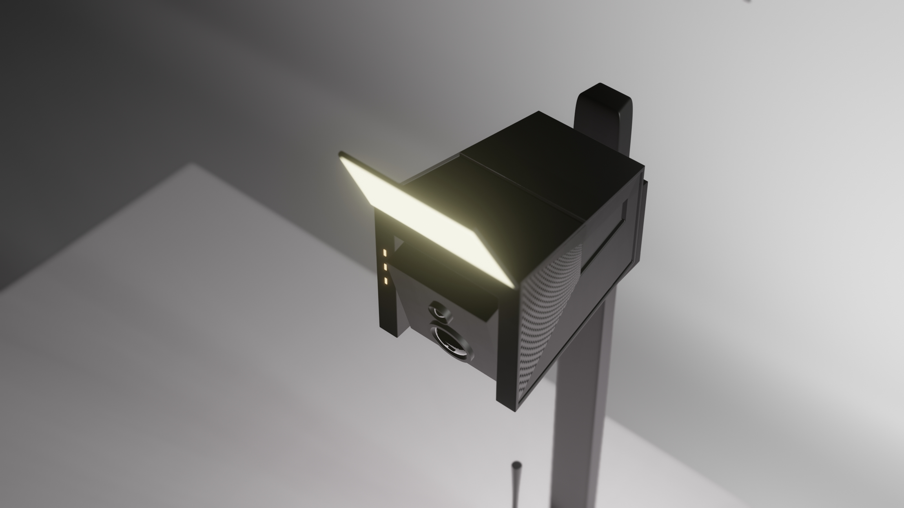
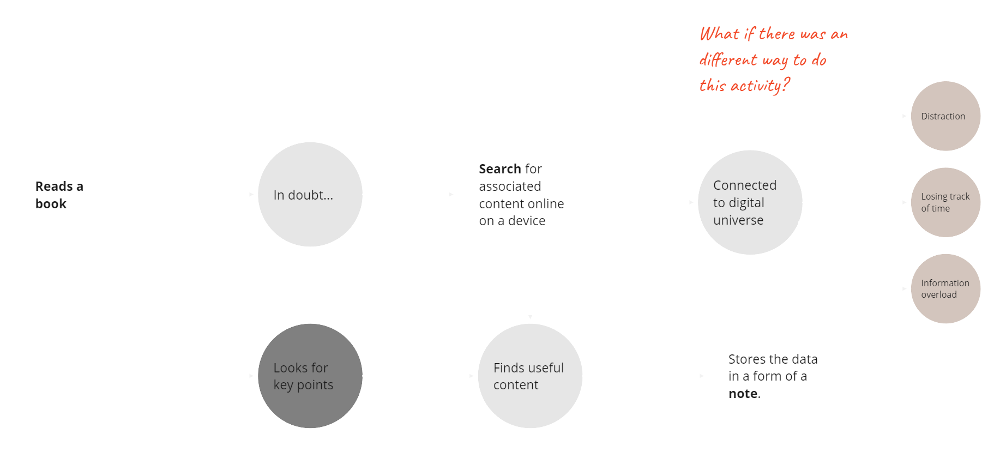
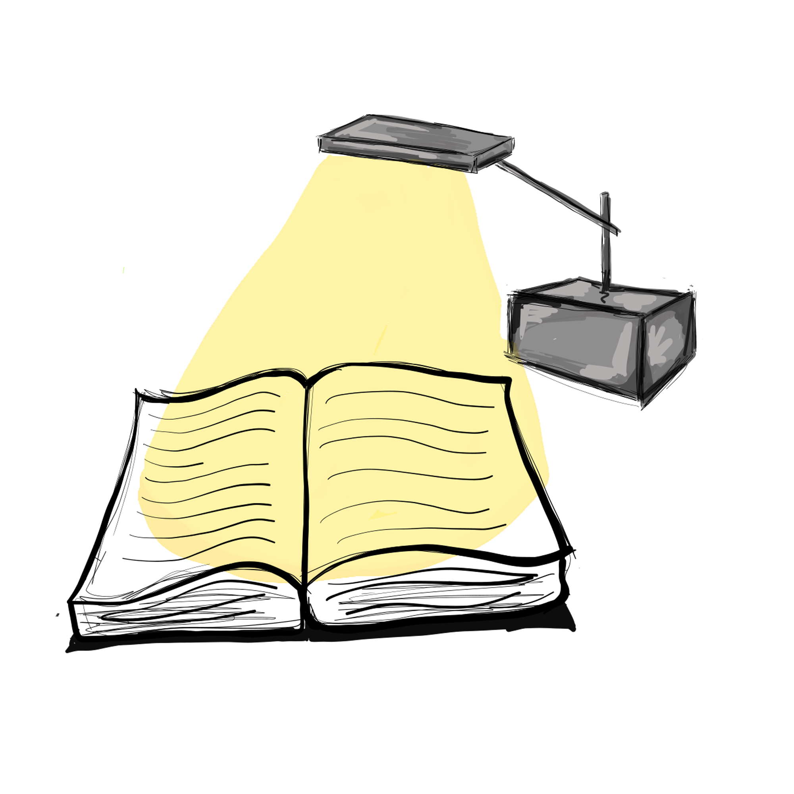
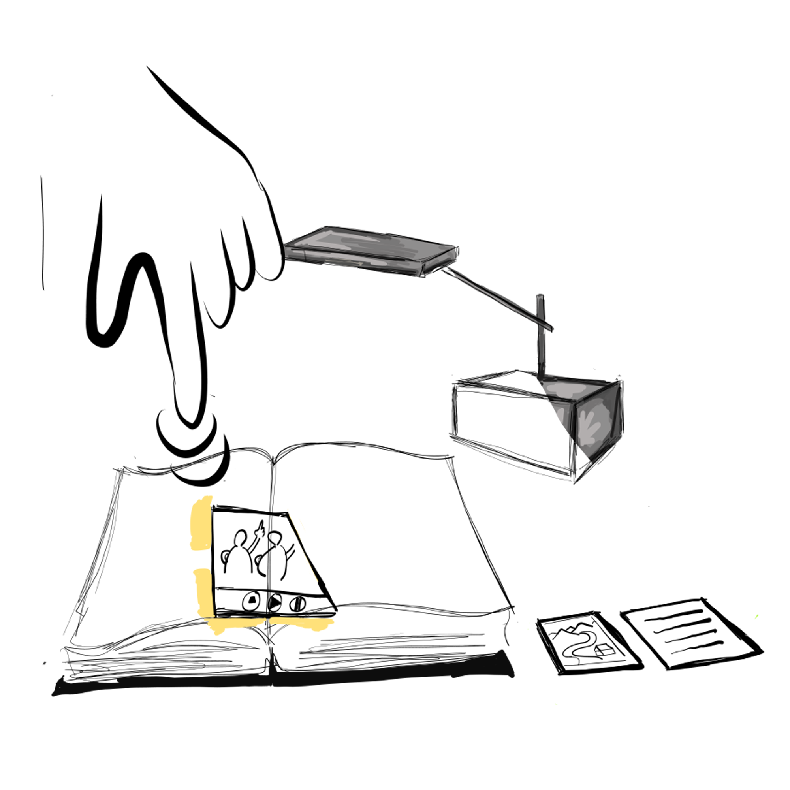
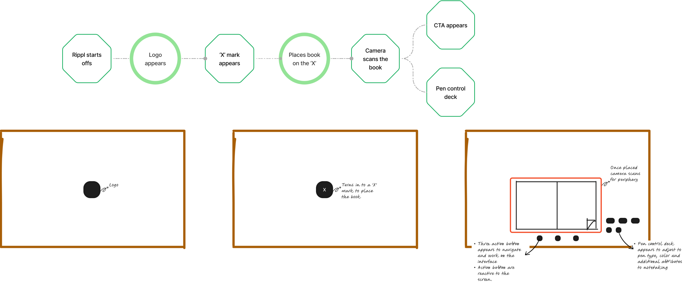
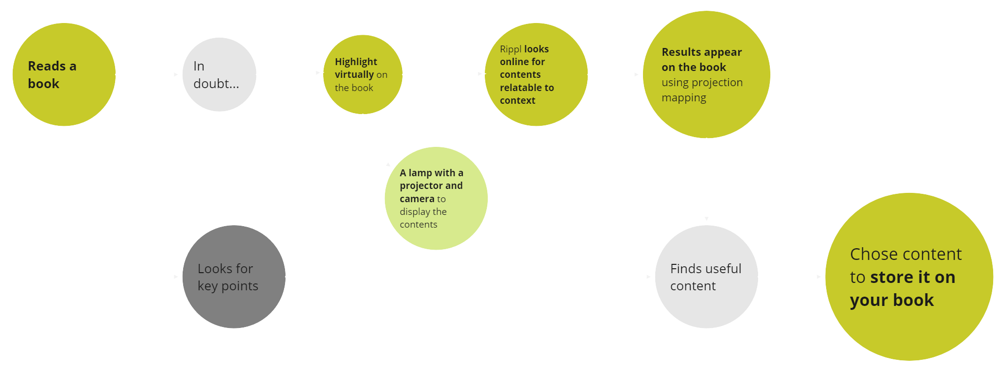
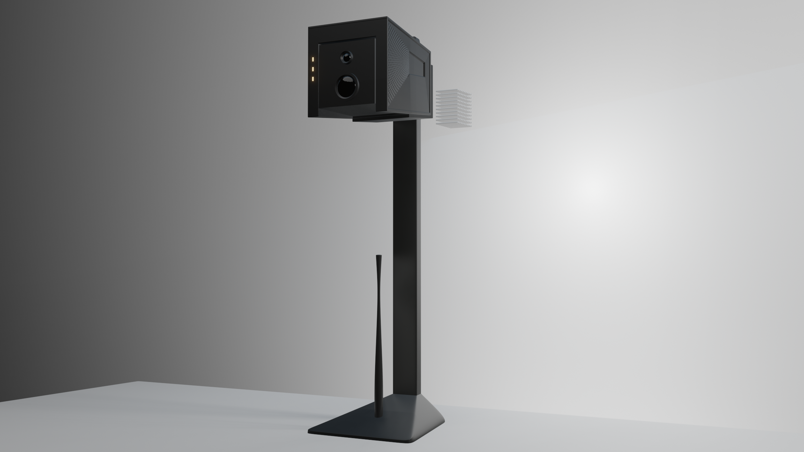

Impaired focus
Technological interruptions reduce comprehension and make it harder to remain inside the material.
Case study / 2023
Notes that ripple
beyond the page.

The premise
Reading asks for attention.
Technology keeps taking it.
I observed distracted reading among my peers and began an ambiguous journey: could emerging technology improve learning without interrupting its most natural ritual?
Initial observation / NIDWhat is Rippl?
Rippl is an advanced projector-table lamp designed to make reading and note-taking more focused, immersive, and interactive—without replacing the book.

The tension
“Picture this: you’re all set to hit the books, but before you know it, your phone buzzes, social media beckons, and your focus takes a fall.”Anonymous interviewee

Technological interruptions reduce comprehension and make it harder to remain inside the material.
Passive reading makes essential information harder to retrieve when it matters.
Traditional reading offers few moments for active, two-way participation.
The design question
A natural gesture
Highlight a term as you already would. Rippl recognises the mark, projects relevant information, and lets you keep what matters beside the original page.


The projected layer


One object, two modes

Built around the reader
Sharp, legible information exactly where it is useful.
Text capture that turns a familiar mark into a doorway.
A layer that works with books and notes instead of competing with them.
Epilogue
By combining hands-on experience with cognitive learning, we can remember important lessons and make better choices. Rippl explores that transition—not as another screen, but as a more attentive relationship with the objects already in front of us.